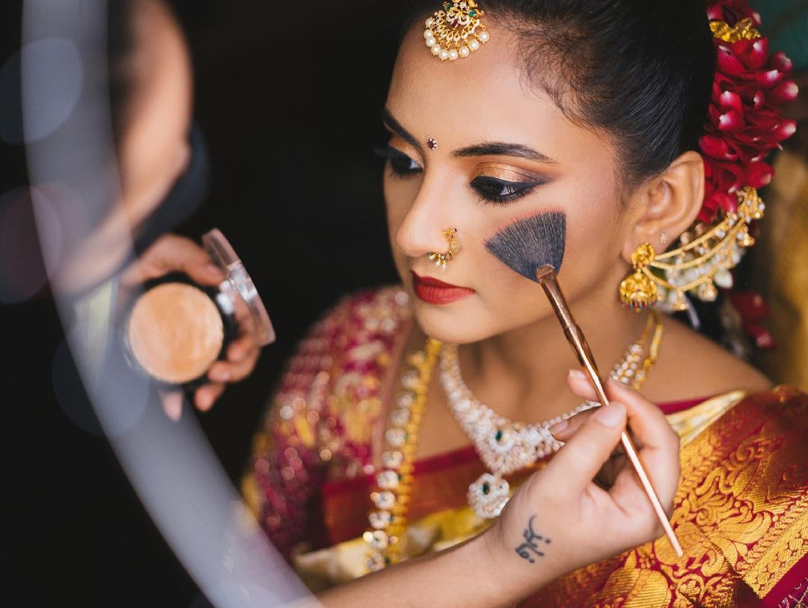

As a bride-to-be there's zero compromise on looking and feeling your gorgeous self henny.That said, since weddings have a habit of burning your pocket to eternity, we've decided to make things a little easier for you. You don’t have to shell out your hard-earned money to pay for a professional with these hardworking bridal essentials curated by us, specially for you. From cry-proof mascaras to picture-friendly shadows, here's spoiling you with options with eight bridal beauty looks that you can try for your special day. There's one for every bride.

Top 5 Bridal Makeup Looks We Swear By
1.BE THE HIGHLIGHT OF THE DAY
Perfecting makeup for brides? Shine on as you reach dizzying heights with the godsend highlighter!
The Look Decode
Use the Wet n Wild MegaGlo Hello Halo Liquid Highlighter, Nykaa Strobe & Glow Liquid Highlighter and Kay Beauty Illuminating Highlighter to contour the hollows of your cheeks and highlight the high-points of your face.
Sweep Revlon Colorstay Shadow Links Eye Shadow – Candy shadow across your entire lid.
Give your lashes a natural look by using Bharat & Dorris Mascara Transparent.
Complete the look with a soft pink lipstick like Nykaa So Matte! Mini Lipstick
47 M Bare Minimum.
2.THE BRONZED BEAUTY
Wedding makeup tips can never be complete without some generous use of our beloved bronzer, can they?The Look Decode
Done with your base makeup? Dress up your eyelid with the centre shade from the Huda Beauty Rose Gold Palette - Remastered shadow.
Fill in your brows with NYX Professional Makeup Micro Brow Pencil and add volume to your lashes with Benefit Cosmetics BADgal Bang! Mascara, Nykaa Eyem24/7 Kajal Eyeliner and Kay Beauty 24 Hour Kajal .
Add definition to the high points of your face with chiselling expert, Makeup Revolution Duo Face Sculpt.
Complete your look with a soft rusty brown lipstick like Faces Ultime Pro Matte Lip Crayon – Really Rust
3 .THE DUSKY DAMSEL
THE DUSKY DAMSELLooking for bridal makeup tips for the dusky, oh-so-sexy dulhan? Your search ends here. Take special note of how the brown lip plays a major role in this offbeat look.The Look Decode
After nailing your base makeup, start by sweeping the third shade from the Maybelline New York The Nudes Eyeshadow Palette Nykaa Eyes On Me! 10-in-1 Eyeshadow Palette and Kay Beauty Metallic Eyeshadow Stick shadow across your entire lid.
Now pick the darkest shade from the palette and fill your lid up to the crease. Blend the shade well to avoid any division.
Go in with the light brown shade from the palette and blend it at the outer corner of your eyes and smudge it under the waterline.
Complete your eye looks with Colorbar I-Glide Eye Pencil and Maybelline Volum Express Hyper Curl Mascara for your lashes.
Finish the look with a soft brown lipstick like Lakme 9 to 5 Primer + Matte Lip Color - Blushing Nude.
4. BLUSHED TO PERFECTION
The perfect bridal makeup tutorial isn’t good enough if it doesn’t talk about rosy cheeks. Decoding the sun-kissed bridal makeup look for the no-glam bride!The Look Decode
Use the Maybelline Flower Beauty Flower Pots Powder Blush and Nykaa Get Cheeky Malibu Barbie on your cheekbones for that flushed glow.
Sweep the peach shade from Huda Beauty Matte & Metal Melted Shadows shadow across your entire lid.
Use a volumising mascara like Kiko Milano Smart Colour Mascara.
Complete the look by applying rusty golden lipstick like GlamGals Matte Finish Kissproof Lipstick - Bronze.
5.THE ETHEREAL BRIDE
Walking down the aisle? Take cue from our bridal makeup tips and achieve that lit-from-within glow, perfect for a church wedding.The Look Decode
Give your face a dewy makeup finish. Using a lightweight foundation like theBalm BalmShelter Tinted Moisturizer SPF18.
Line your upper lash line with a soft eyeliner like NYX Professional Makeup Epic Ink Liner Black
Define and fill in your brows with Nykaa Oh My Brow! Eyebrow Mascara - Sirius Brown
Finish the look by applying some soft pink almost nude-ish lipstick, like Huda Beauty Power Bullet Matte Lipstick